100%Drainage blocked
OngoingSewage overflow
Athi R.Downstream risk
0Official responses
Case Overview
Open storm water systems and primary drainage channels along the Ngong-Matasia road grid have deteriorated entirely. Continuous unmanaged effluent pooling has triggered a severe public health hazard affecting residents and businesses within Olkeri Ward. Sewage flows directly toward the Athi River. Formal complaints have been filed with the MCA and Kajiado County environmental authorities. No action taken to date.
Field Evidence — 19 Verified Logs
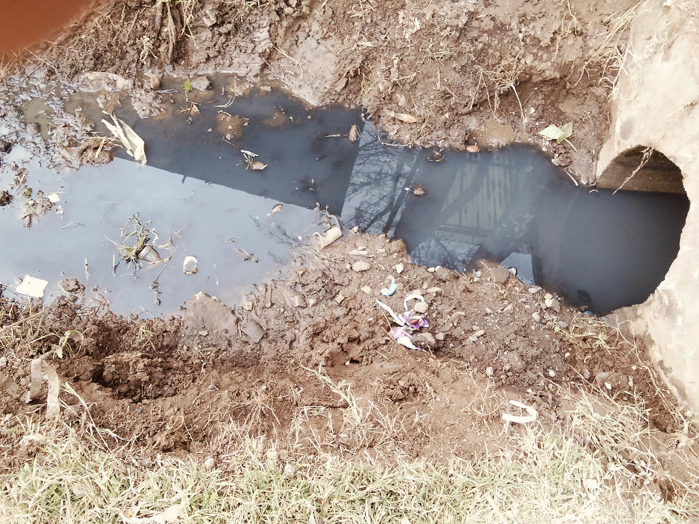
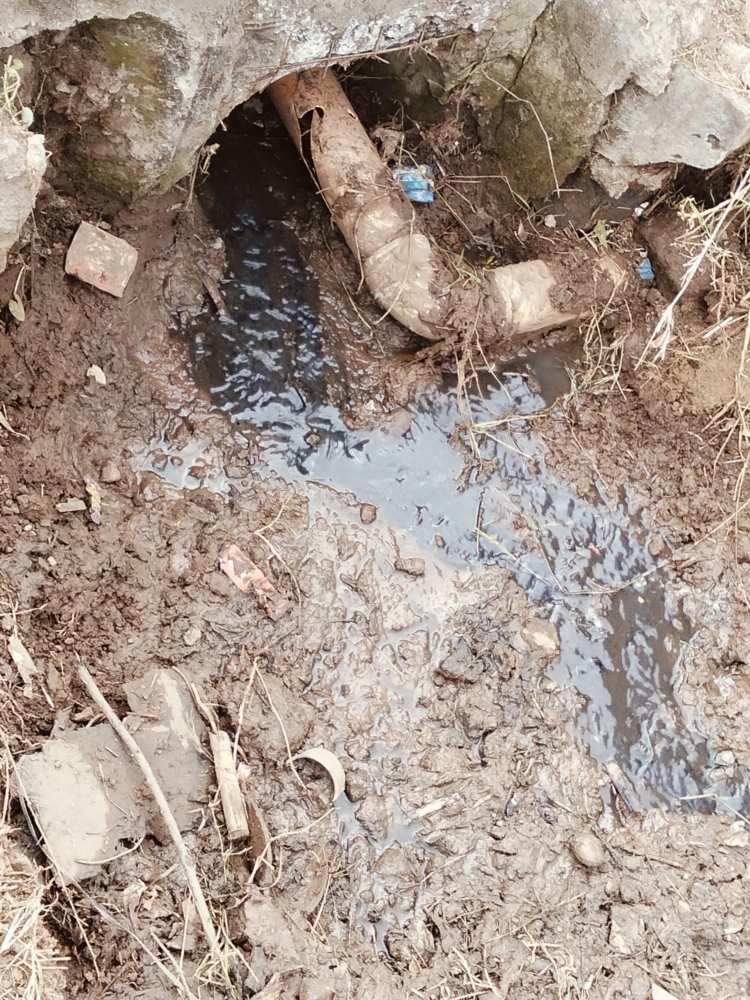
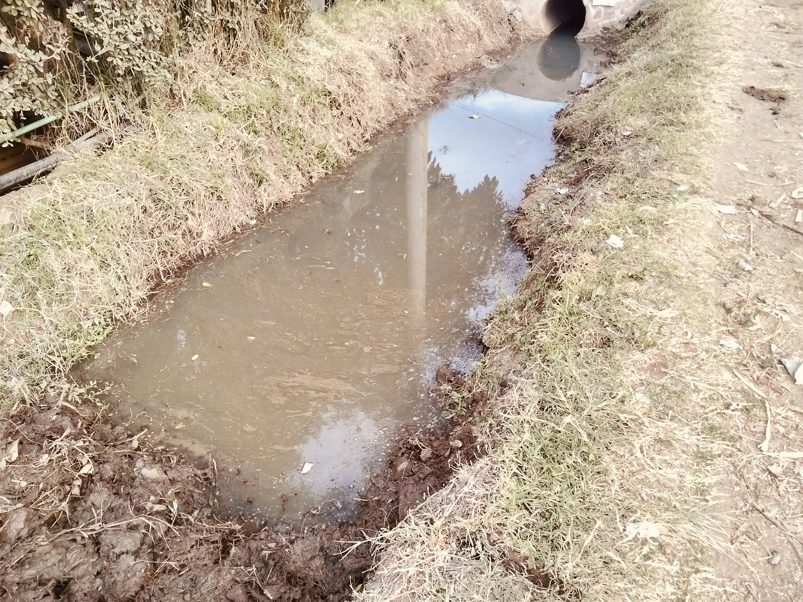
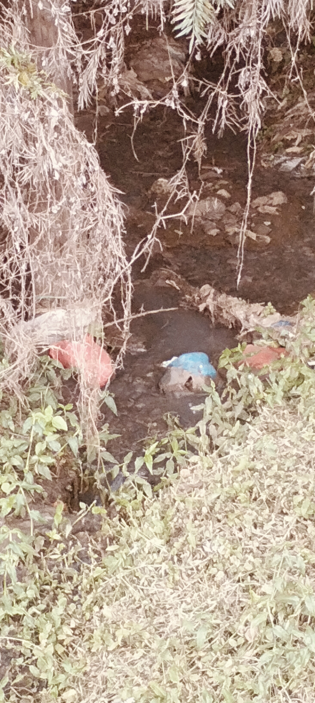
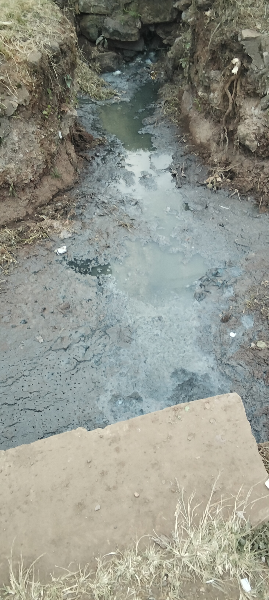
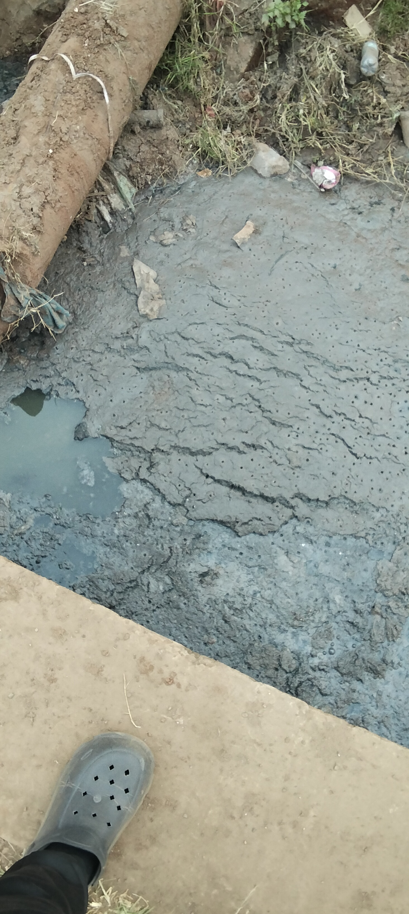
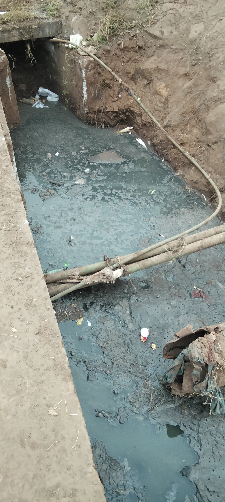
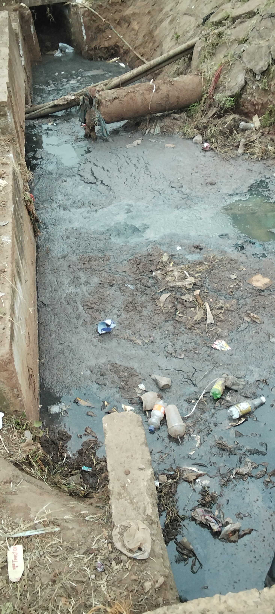
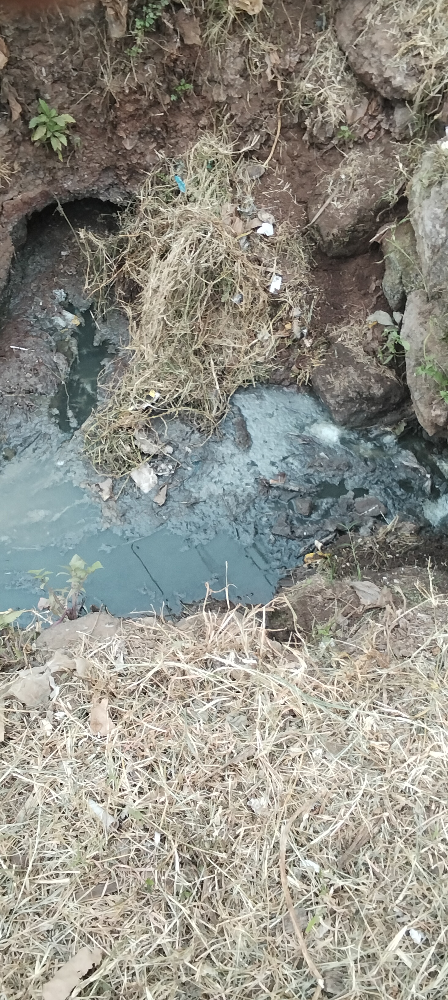
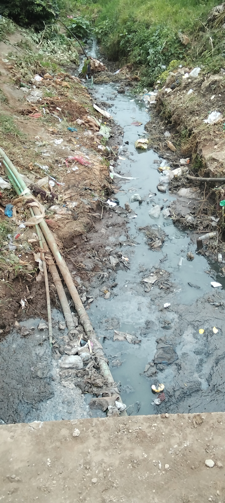
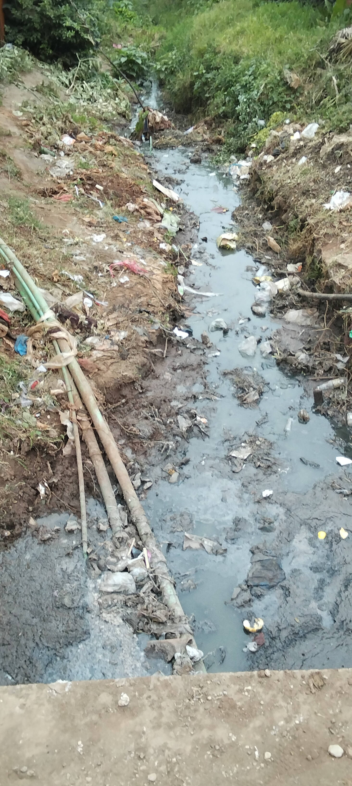
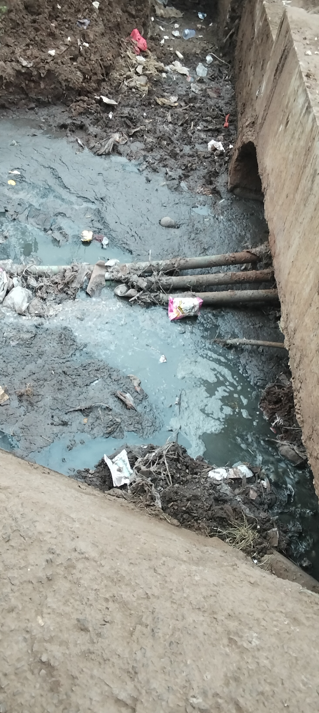
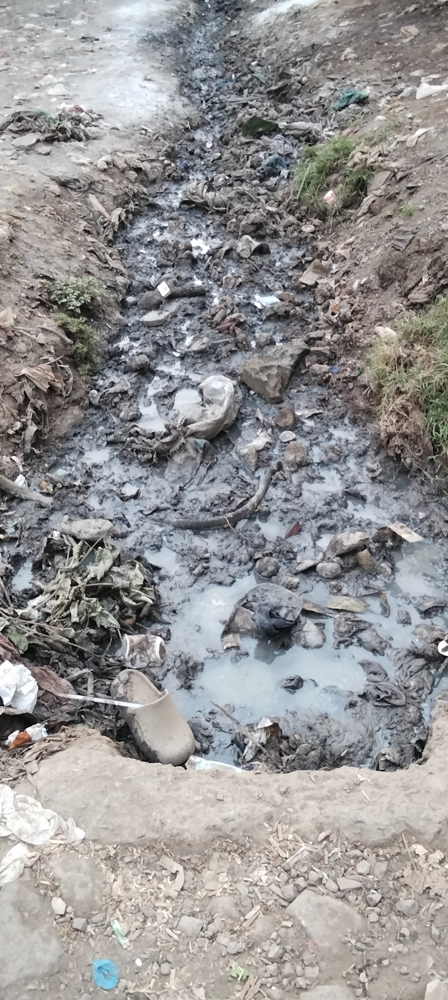
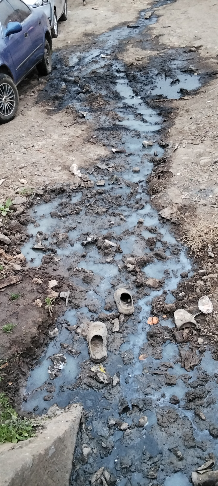
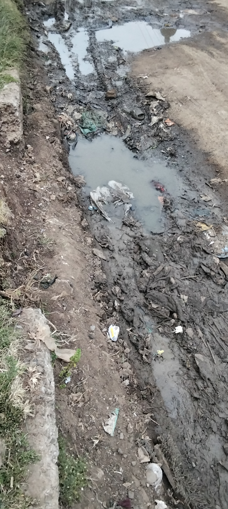
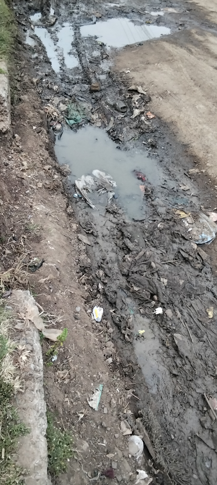
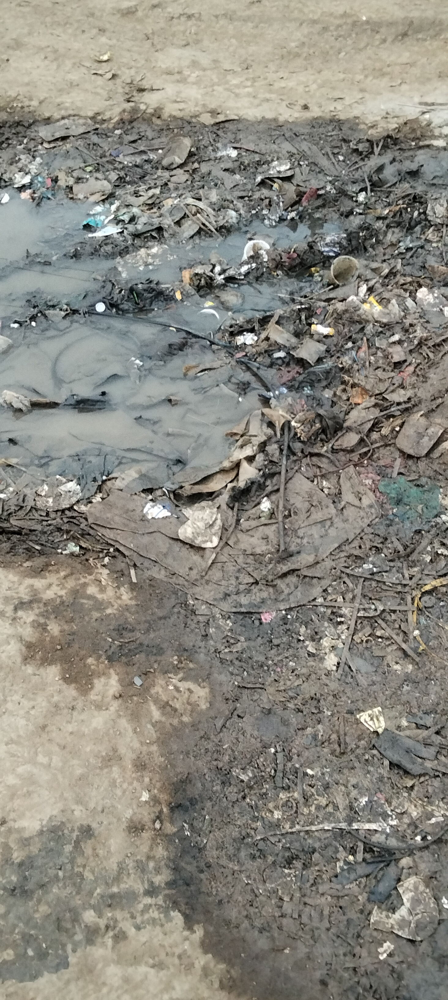
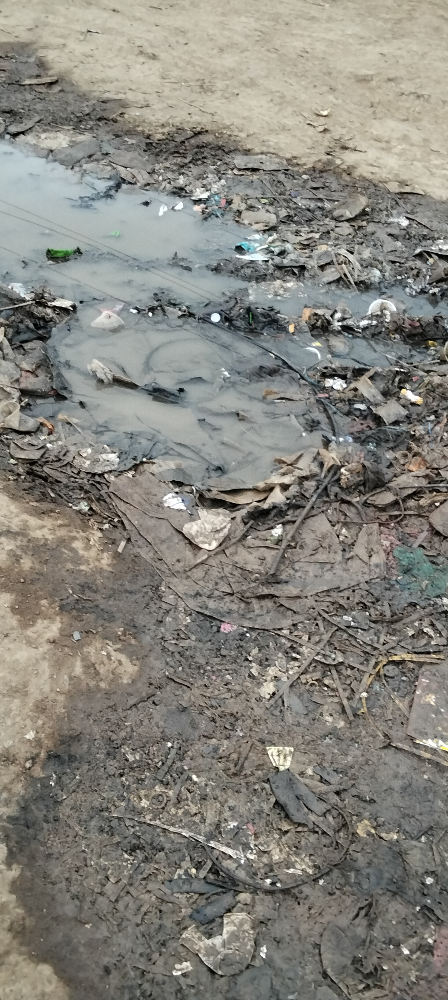